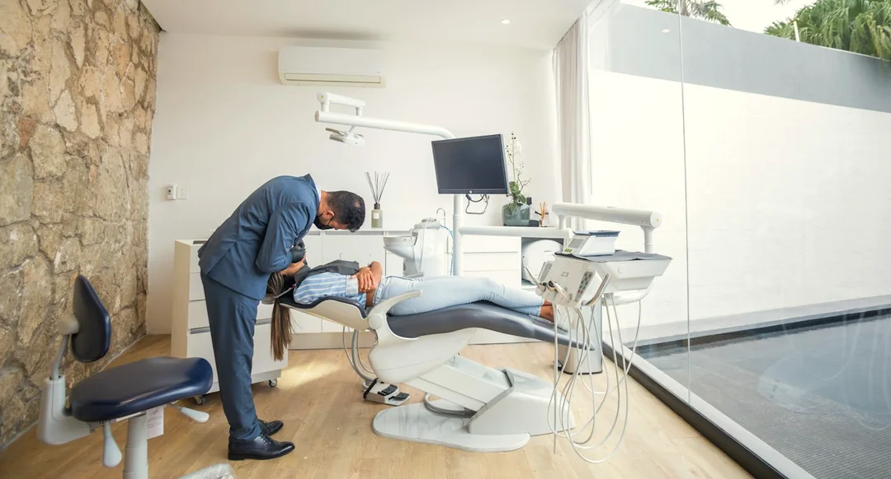
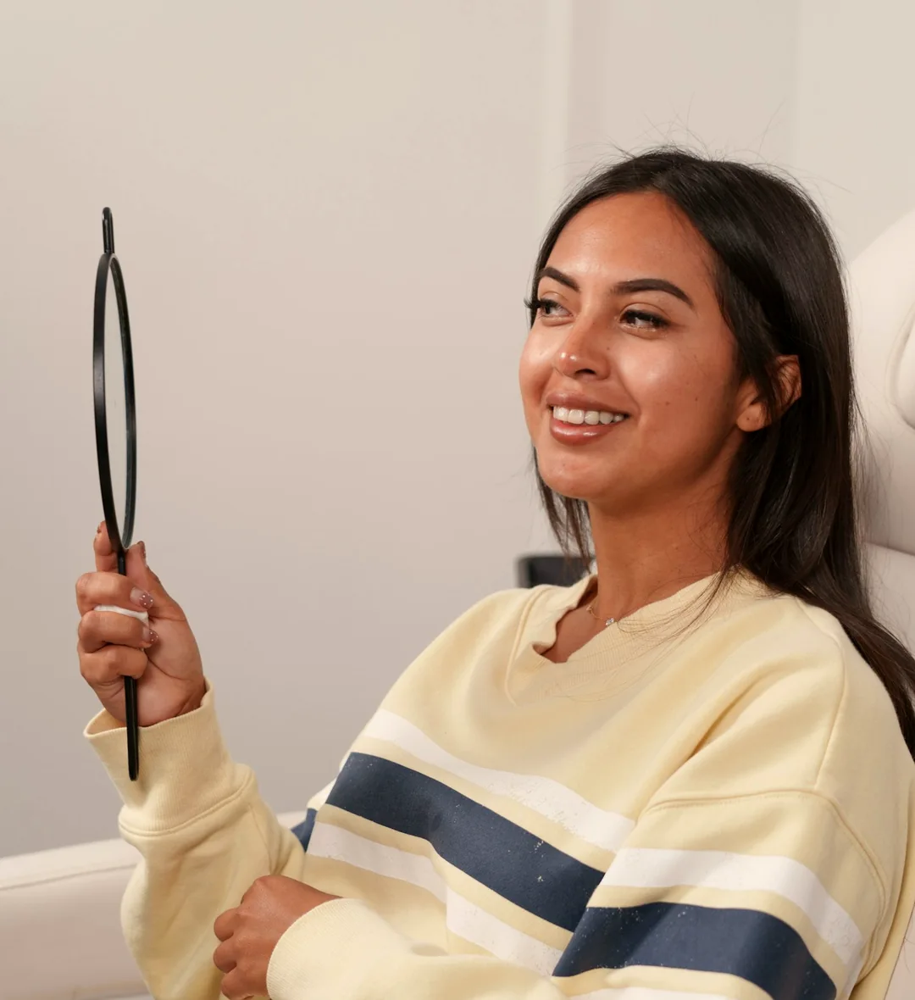
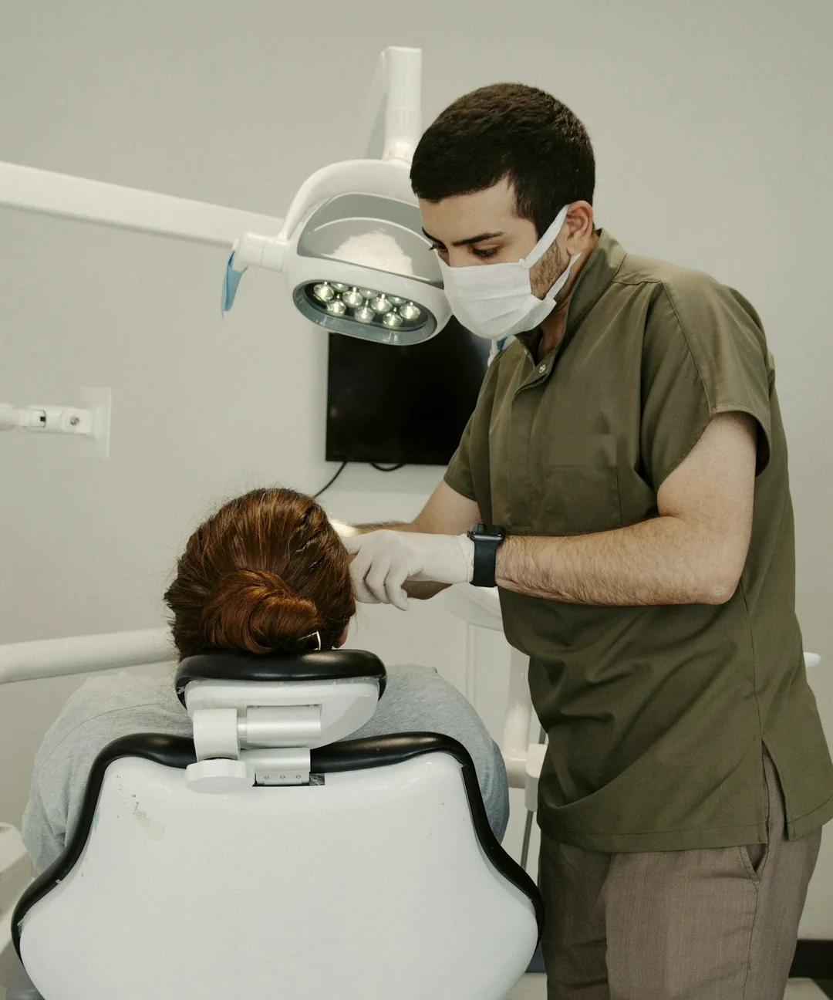
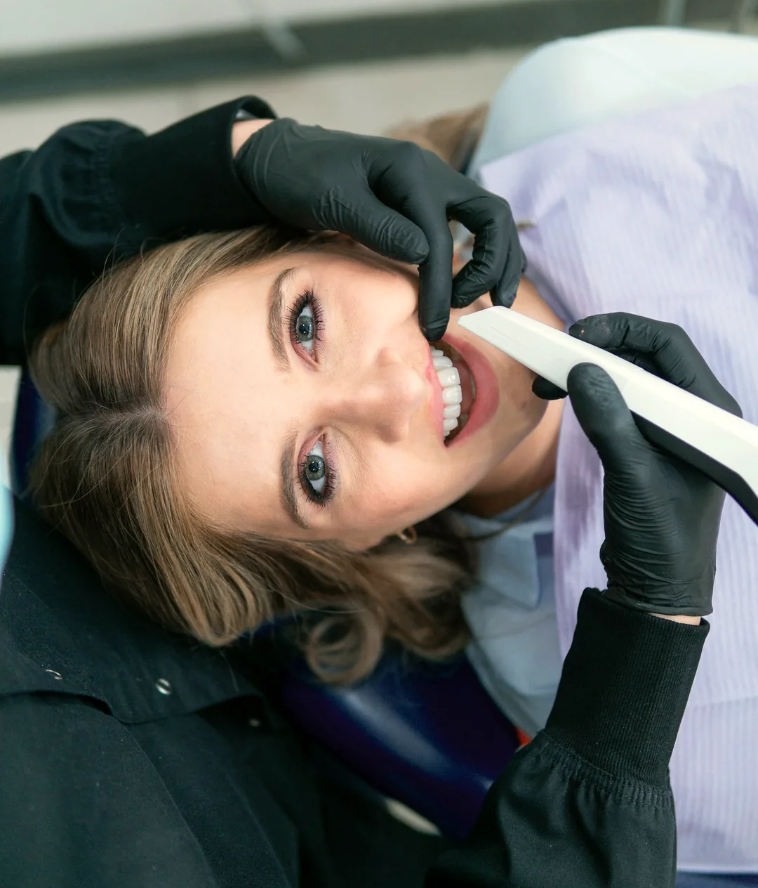
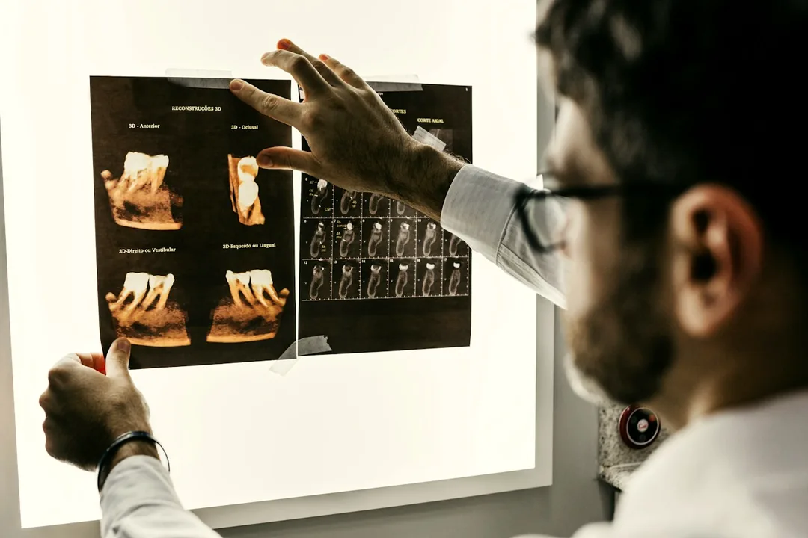
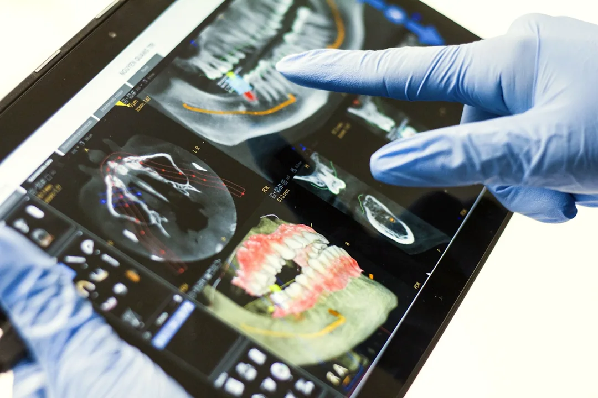
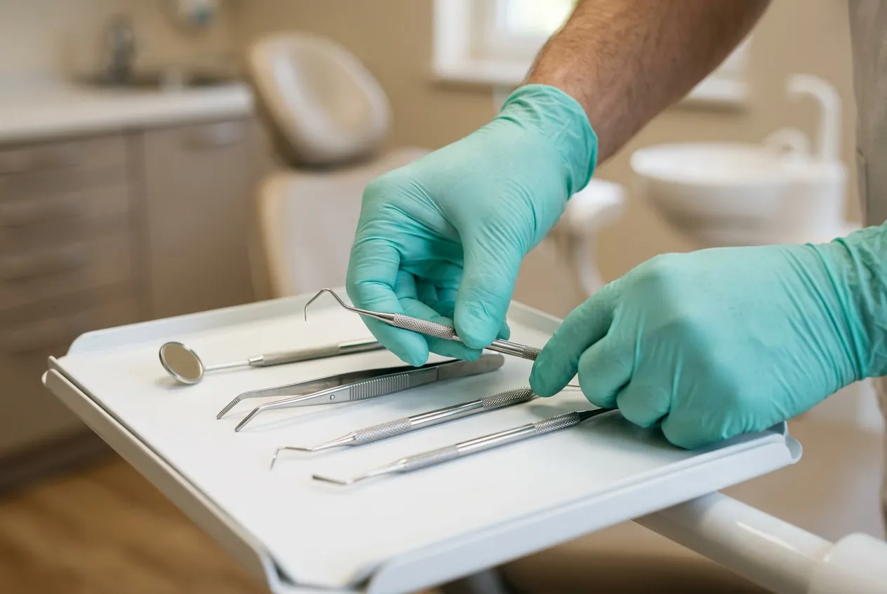
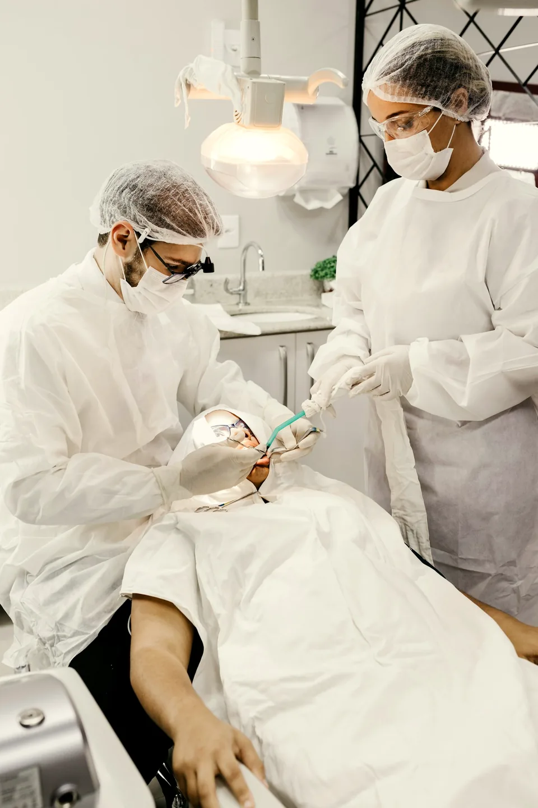

Conversation while sitting upright
You don’t start flat on your back under a bright lamp. We talk through your history, sensitivities, and questions face-to-face first.
Smile Dental Clinic · Pune
Most people don’t mind looking after their teeth—they just dislike feeling rushed, lectured, or surprised by a treatment plan. We begin every appointment sitting upright in conversation, show you clear photographs of what we see, and move at a pace that feels comfortable for you.

“We built the kind of practice we wanted for our own families: quiet rooms with natural daylight, clinicians who explain things in plain English, and the freedom to pause whenever you need a moment.”

Dental anxiety usually comes from not knowing what is about to happen next. We changed the rhythm of a typical appointment so you stay in control from start to finish.
You don’t start flat on your back under a bright lamp. We talk through your history, sensitivities, and questions face-to-face first.
Using a small intraoral camera, we show you high-resolution photographs of your teeth so you can clearly distinguish urgent care from optional work.
We apply numbing gel before any local anaesthetic and give it full time to work. Raise a hand at any moment and we pause immediately.
Before scheduling any procedure, you receive a clear breakdown of steps, appointment lengths, and fees—with zero pressure to decide on the spot.
Whether you are due for a routine cleaning, looking to brighten your smile, or dealing with a sudden toothache, we tailor the pace and plan around you.

“It’s been a while since my last visit—or I’ve noticed a little sensitivity when drinking cold water.”
Preventive visits shouldn’t feel like a scolding. We remove plaque and tartar gently with warm-water ultrasonic scaling, check your gums and enamel health, and give you practical advice that fits your daily routine.
“There’s a chipped edge, stubborn staining, or crowding I’ve wanted to fix without looking artificial.”
Good cosmetic dentistry looks like your own teeth on their best day. From conservative composite bonding to 3D-scanned clear aligners and sensitivity-managed whitening, we focus on natural proportion and shade.


“I have a persistent ache, a cracked filling, or a missing tooth I want to replace properly.”
When a tooth hurts, you need calm, decisive relief. Modern rotary endodontics and patient-paced local anaesthesia make root canal therapy feel comparable to a routine filling, while 3D-guided dental implants restore missing teeth predictably.
Select any treatment to ask Riya about what a visit involves.
Oral exams, digital X-rays, ultrasonic scaling, gum care, and preventive sealants.
Magnification-assisted rotary endodontics, deep numbing, and ceramic crown protection.
Enamel-safe bleaching, conservative composite bonding, and custom porcelain veneers.
3D optical impressions, removable clear aligners, and ceramic or self-ligating braces.
CBCT-planned titanium implants, gentle wisdom tooth care, and same-day pain relief.
We invest in clinical tools that make appointments shorter, gentler, and easier to understand—so we never have to guess and you never feel kept in the dark.

For crowns, nightguards, and clear aligners, a handheld optical wand captures a precise 3D model of your teeth in minutes—without gag-inducing impression trays.
Digital sensors use a fraction of traditional X-ray radiation and appear instantly on the chairside screen, allowing us to walk through every finding together.
Every handpiece and instrument goes through ultrasonic cleaning and Class-B vacuum autoclave sterilisation, remaining sealed in a spore-tested pouch until opened in front of you.
A reassuring dental visit comes down to the people across from you. Our general, restorative, and orthodontic workflows are coordinated under one roof so your notes and comfort preferences never get lost.
Every clinician in our practice follows the same principle: listen first without judgement, favour conservative tooth-preserving care over aggressive treatment, and share a clear written plan before you schedule your next step.


Whether it has been six months or six years since your last checkup, getting started is straightforward and judgement-free.
Use the appointment request form below or chat with Riya in the bottom-right corner to share your question, symptom, or preferred days.
Our reception team reviews your request against our clinicians’ schedules and contacts you directly to confirm your exact appointment slot.
We start sitting upright in conversation, take chairside photos (and digital X-rays only if needed), and talk through your options without pressure.
Clear answers to common questions before your visit. If you’d like to ask something specific, Riya is always available in the chat window.
You are in good company—many of our patients felt the same way before visiting. We start every first visit sitting upright in conversation, explain every step before we begin, use topical numbing gel before any local anaesthetic, and pause the moment you raise your hand.
Modern root canal therapy relieves toothache rather than causing it. With buffered local anaesthesia and quiet rotary instruments, most patients tell us the procedure feels very similar to having a standard filling placed.
You can request a visit either through Riya in the chat window or using the form below. Both record an appointment request with your preferred days and times. Our clinic team then contacts you directly to confirm the exact slot against our dentists’ live clinical schedule.
Always. After your examination and chairside photo walkthrough, we provide a clear written treatment plan and fee breakdown before any procedure is scheduled.
Share a convenient day and time using the form, or open a conversation with Riya if you would like to ask a few questions first.
Once we receive your request, our reception desk will reach out to confirm available times and share directions for your visit.
Riya is available 24/7 to answer questions about checkups, root canals, cosmetic dentistry, or aligners and log your callback request.
Share your details below—our team will contact you to confirm availability.